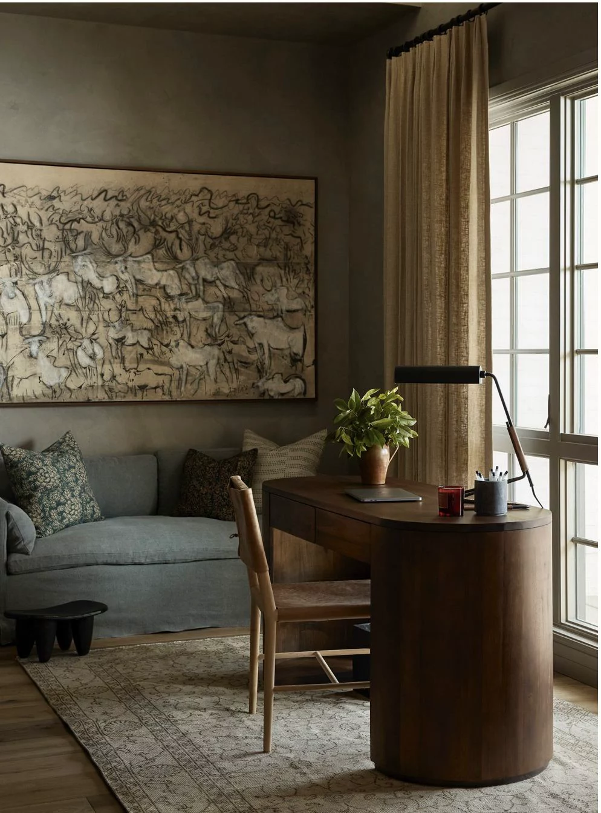
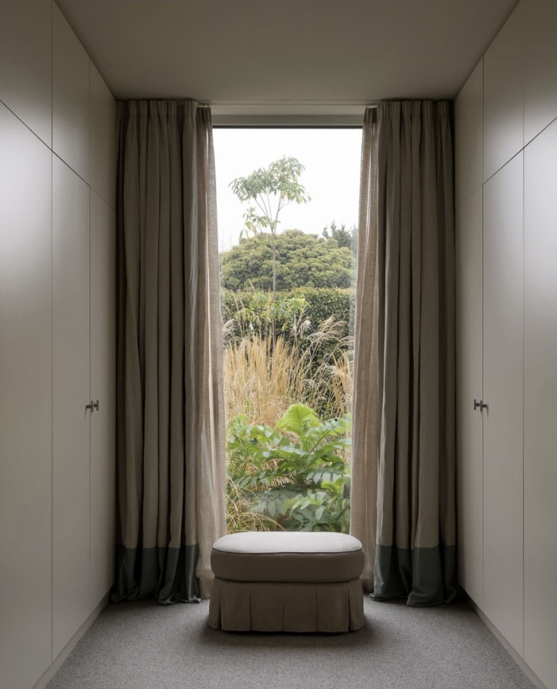
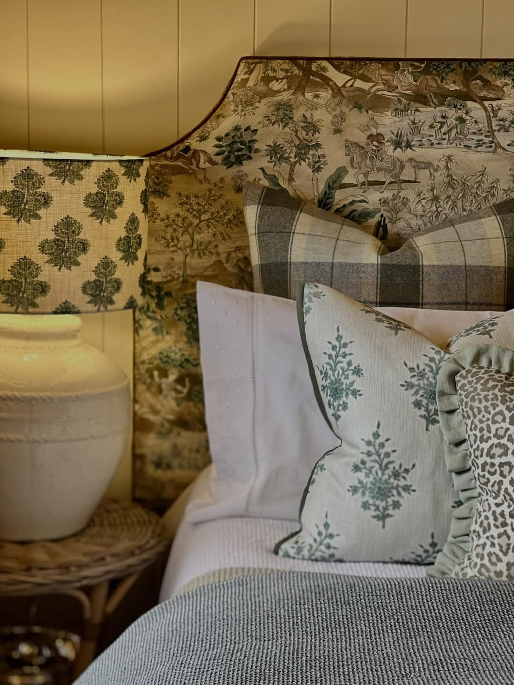
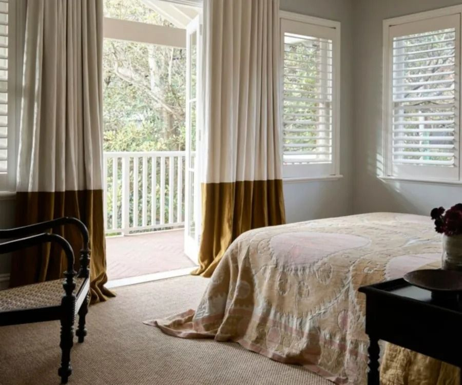

The homes that feel genuinely cosy in winter are not the ones that have been extensively redecorated. They are the ones that have been quietly adjusted: a considered edit of textiles, a shift in how the light is used, a few decisions made with the season in mind. It is the difference between a home that happens to be in winter and one that feels like it belongs there.
Here is how to approach it.
Start with what is underfoot
Of all the elements that contribute to a sense of warmth, few are as immediate as the floor beneath your feet. Timber and stone are beautiful, but they read cold in the cooler months — visually as much as physically. A rug does more to change the feeling of a room in winter than almost any other single addition.
The key is proportion. A rug that is too small for a furniture grouping will make the room feel more fragmented, not less. For a living room, the ideal is either to have all four legs of the sofa and chairs sitting on the rug, or at minimum the front legs — this anchors the seating into a cohesive zone and prevents the rug from looking like it has been placed there as an afterthought.
For texture, a tufted or hand-knotted wool rug will always outperform a flatweave in winter. The density and weight of the pile changes how a room sounds as much as how it looks, absorbing noise and creating a quality of quiet that feels genuinely restful. In a bedroom, the simple act of placing a rug on the side you step out of bed on each morning is worth more than you might expect.

Rethink your curtains
Curtains are one of the most underrated tools in a winter interior. They provide insulation where glazing cannot, they soften the harshness of after-dark windows, and when properly scaled and hung, they do more for the proportion of a room than almost any other element.
I will elaborate more in a future blog post but in summary, the two most common mistakes are hanging curtains too low and cutting them too short. Curtains should be fixed as close to the ceiling as possible, or to the top of the architrave where no pelmet exists, and they should reach the floor without hesitation. A curtain that falls slightly short looks uncomfortable, like something that has been measured incorrectly. Curtains that graze or puddle at the floor look entirely deliberate.
Fabric matters in winter, too. A lined curtain, even in a relatively lightweight fabric, will retain significantly more warmth than an unlined one. If your existing curtains are unlined and you notice a draught near the windows in cooler months, this is almost always the reason.
In terms of colour and material, the cooler months are an opportunity to consider heavier or richer fabrics: a velvet in a deep tone, a linen that has enough weight to fall properly, a wool or wool-blend that brings texture as well as warmth. These need not be permanent changes; some clients have seasonal curtain panels made precisely for this purpose.

Layer textiles rather than adding more furniture
The temptation when a room feels cold is to buy something new. A new sofa, a new armchair, something that carries the promise of comfort. More often than not, the room already has what it needs. What it lacks is texture and weight.
Cushions and throws are the most direct way to introduce both. For cushions, the guiding principle is fewer and better — two or three cushions in considered fabrics will almost always read more warmly than five or six that have been accumulated without a clear intention. Mixing scales of pattern and varying the material — a velvet against a boucle, a heavier knit alongside something smoother — creates the kind of depth that makes a sofa feel genuinely inviting rather than simply decorated.
Throws deserve particular attention for adding a layer of texture and cosiness to a room. In winter, a wool or wool-blend in a deep neutral or a tone that echoes something already present in the room is almost always the right choice. It does not need to match. It needs to belong.
Upholstery is a longer-term consideration, but one worth making. If you have a sofa or armchair that has outlived its fabric rather than its frame, winter is a good time to consider reupholstery. A well-made piece in a new fabric — particularly a velvet or textured weave — can transform the feeling of a room for a fraction of the cost of replacement.

Attend to the light
No single decision changes the atmosphere of a room in winter more dramatically than how it is lit. And no single mistake is more common than over-relying on overhead light.
Overhead lighting — particularly recessed downlights — creates a flat, even wash of light that works well for function but contributes almost nothing to atmosphere. In winter, when the evenings are longer and the light outside is gone by late afternoon, this matters considerably more than it does in summer.
The solution is layering. A room with three light sources operating simultaneously will feel entirely different to the same room lit from above. Table lamps at seated eye level create warmth and intimacy that ceiling lighting cannot replicate. A floor lamp beside a reading chair, a pair of lamps flanking a bed, a picture light casting a pool of warmth over an artwork: these are the additions that shift a room from functional to genuinely welcoming.
Colour temperature matters, too. For living rooms and bedrooms in particular, warm-toned globes make a meaningful difference to how a space feels after dark.
If your room currently relies on a single overhead fitting, the investment in one or two well-scaled lamps placed thoughtfully rather than wherever there happens to be a spare surface will be among the most impactful changes you make.
Consider the bedroom separately
The bedroom deserves its own attention in winter, because the way it functions changes with the season. Summer encourages light, open, minimal. Winter asks for something altogether different: warmth, enclosure, the sense of a room that is specifically designed to be retreated into.
Bedding is the most obvious starting point. Linen is a year-round fabric and works in winter more than many people expect, but if you prefer a softer hand in the colder months, cotton jersey or flannelette sheets have a particular quality of comfort that reads as genuinely seasonal. Layering bedding — a fitted sheet, a flat sheet, a duvet, and a throw or quilt across the end of the bed — adds both warmth and the visual depth that makes a made bed feel properly considered.
An upholstered bedhead, if you do not already have one, transforms the usability of a bedroom in winter. There is a significant difference between sitting up in bed in the colder months with a soft, padded surface behind you and doing so against a timber or metal frame, or worse, a bare wall. It is also one of the best opportunities in the bedroom to introduce colour or texture in a way that anchors the room.
Cushions in the bedroom follow the same principle as the living room: fewer, better, and in fabrics that reward touch. Two or three decorative cushions is almost always enough. Beyond that, making the bed becomes a daily exercise in logistics rather than pleasure.

A note on what not to do
It is worth saying, because it is a common impulse: resist the urge to add too much. A room that feels cold in winter does not usually need more objects, more furniture or more pattern. It needs warmth in the right places and light at the right height.
The homes that feel most genuinely comfortable in winter are not the ones that have been dressed for the season with seasonal cushions and winter-specific objects that will be packed away in September. They are the ones that have been considered at a deeper level, where the textiles have weight and quality, the lighting has been thought about properly, and the furniture is in proportion to the space it occupies.
Those decisions, made well, mean your home will feel warm in winter without you needing to think about it.